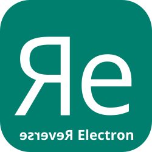

Du bist autistisch, aus der Region Luzern, interessierst dich für Elektronik und benötigst spezifische Begleitung rund um das Thema Ausbildung, Studium und Beruf? Dann bist du bei mir genau richtig!
Ich biete fachspezifische Beratungen im Bereich Elektronik an und habe private sowie berufliche Erfahrungen mit autistischen Schülern, Lernenden und Studenten. Mehr zu meiner Person findest du hier.
Habe ich dein Interesse geweckt? Dann schaue doch bei den Zielgruppen vorbei und prüfe, ob ich ein passendes Angebot für dich habe.
Reverse Electron ist der Name meines Projekts, bei dem es darum geht, eine Anlaufstelle im Raum Luzern anzubieten, welche auf Coaching, Mentoring und Nachhilfe im technischen Bereich mit Fokus Elektronik ausgerichtet ist.
Die Angebote richten sich insbesondere auch an autistische Personen, welche ein berufliches Interesse im technischen Bereich haben. Daher kommt auch der Name Reverse Electron, denn manche Elektronik-Begeisterte sind einfach anders.
Reverse Electron steht aber allen Interessierten zur Verfügung. Egal ob neurotypisch oder neurodivers, mit oder ohne Diagnose, mit oder ohne Unerstützung durch die IV - bei Reverse Electron zält nur deine Motivation und deine Neugier!
Gerade bei autistischen Erwachsenen kann es von der ASS Diagnose bis zur ersten Hilfestellung durch offizielle Stellen mehrere Jahre dauern. Während dieser Zeit ist man oft völlig überfordert, Orientierungslos und braucht jemanden, der die Prozesse kennt und einfach erreicht werden kann.
Mit dem Projekt Reverse Electron versuche ich ein breites Spektrum von Angeboten abzudecken, welche sowohl von den Betroffenen selbst aber auch von ihren Eltern oder Ausbildungsbetrieben in Anspruch genommen werden können.
Das zentrale Ziel von Reverse Electron ist es, allen Interessierten zu helfen, ihre Ausbildungs- und Berufsziele optimal zu erreichen.
 Aus der Projektidee heraus habe ich ein Einzelunternehmen unter dem Namen Reverse Electron Ervin Mazlagic gegründet, mit welchem diese Idee umgesetzt werden soll.
Ich gehe gleichzeitig einer Vollzeitbeschäftigung nach, in welcher ich als Senior Engineer Hardware entwickle und Lernende in der Schwerpunktversetzung mit Vertiefung Hardwareentwicklung und Leistungselektronik ausbilde.
Mein Einzelunternehmen ist somit eine Nebenbeschäftigung und deshalb auch meine eingeschränkten Geschäftszeiten.
Du willst mehr über die Person hinter dem Unternehmen erfahren? Kein Problem! Eine kurze Übersicht findest du hier.